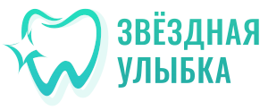
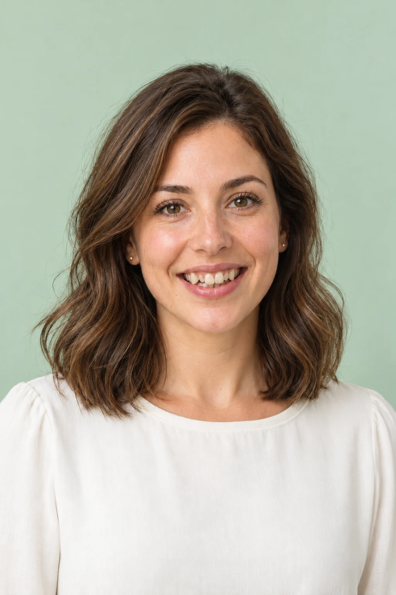
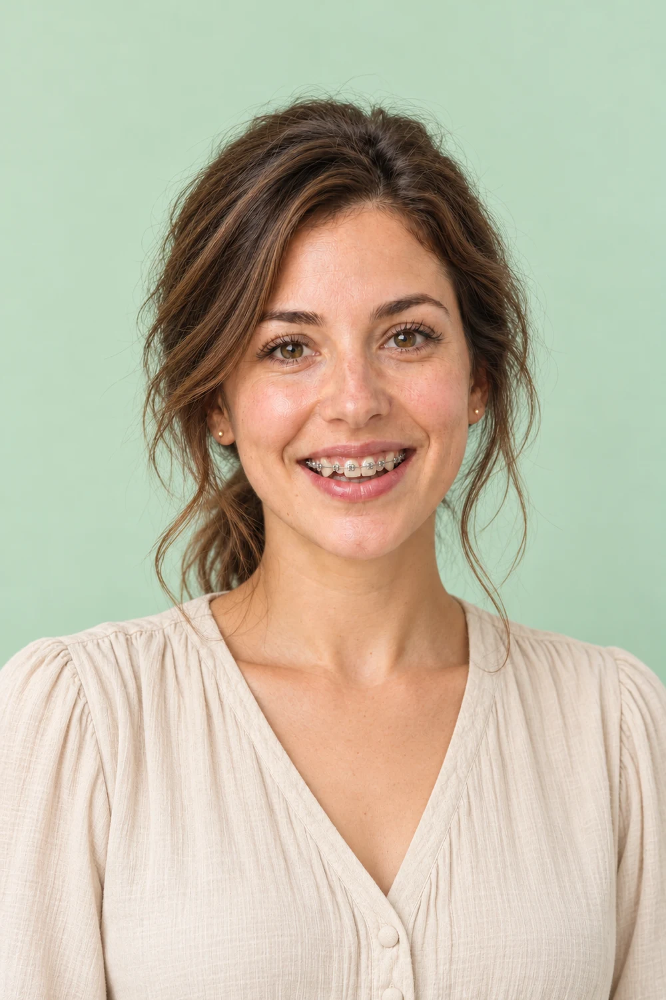
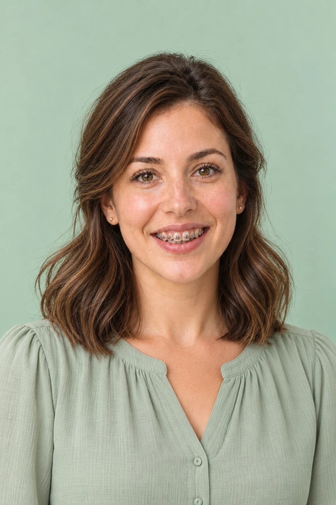
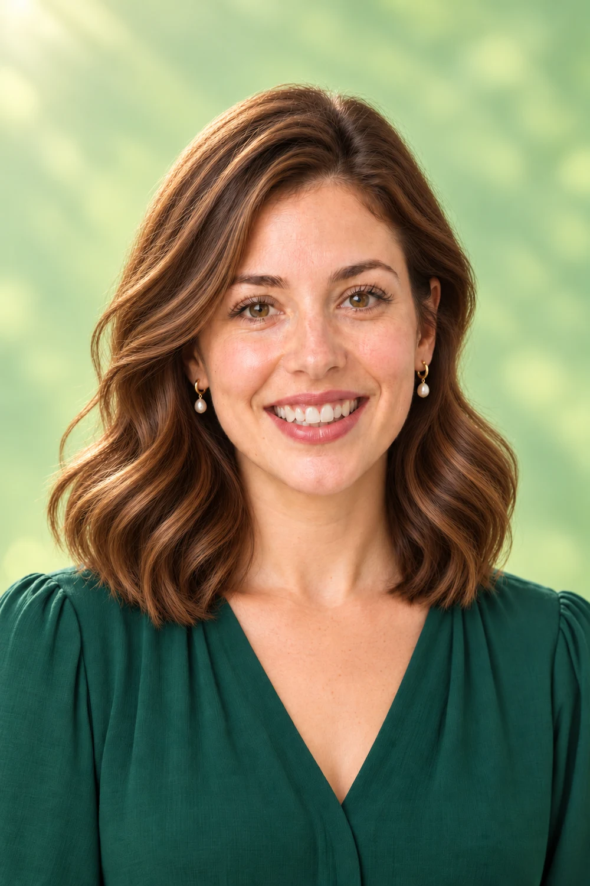
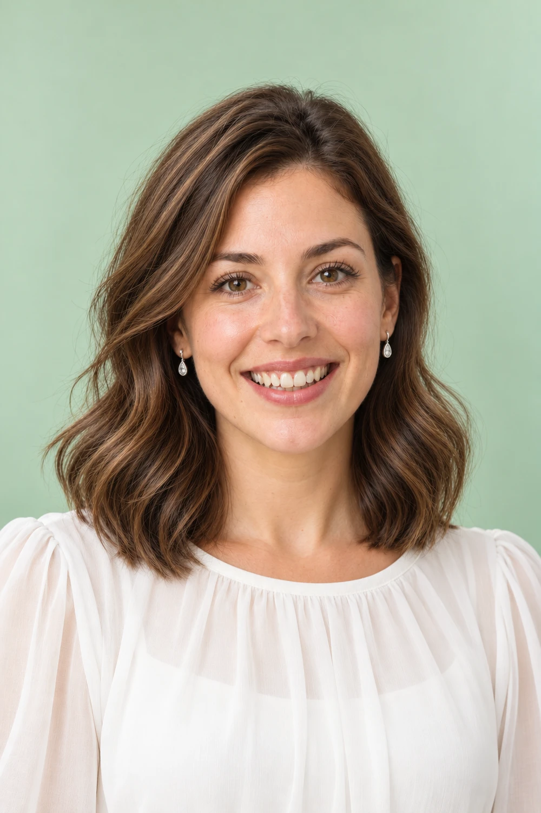
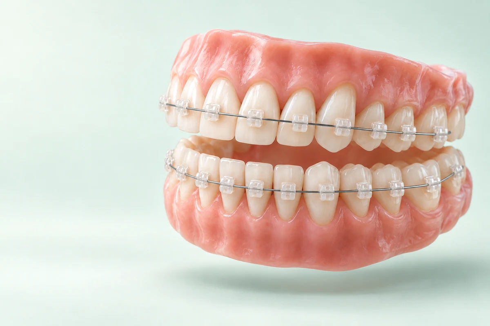
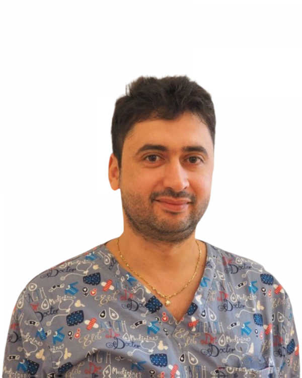
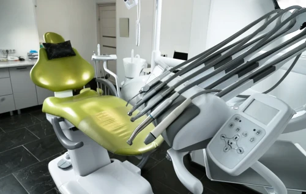

Практичный вариант
Металлические
Заметны на зубах. Можно сравнить лигатурную и самолигирующую конструкции.
Лигатурные · 1 челюсть39 500 ₽
Самолигирующие · 1 челюсть75 000 ₽

✦ Ортодонтия · Санкт-Петербург, Шушары
К ровной улыбке — с понятным бюджетом и поддержкой ортодонта.
Сравните системы, познакомьтесь с врачом и посмотрите предварительный расчёт.





Ваши пожелания и вопросы — первая точка маршрута.
Вы не одни в своих сомнениях
Начать проще, когда можно спокойно разобраться — в расходах, выборе врача и самом лечении.
Ваш первый понятный шаг
Четыре коротких вопроса. Варианты брекетов, опубликованные цены и платежи по месяцам — без обязательного номера телефона.
Выбор без лишней сложности
Материал влияет на внешний вид, конструкция — на способ фиксации дуги. Подходящий вариант обсуждается с ортодонтом.
Заметны на зубах. Можно сравнить лигатурную и самолигирующую конструкции.

Светлые полупрозрачные замочкиБрекеты близки по оттенку к зубам. Дуга и другие элементы могут оставаться заметными.
В лигатурных системах дугу удерживают отдельные лигатуры. В самолигирующих — встроенные замочки. Конструкция сама по себе не определяет срок или результат: выбор зависит от плана лечения.
Позиции из прайса клиники. Это не полная смета лечения. Состав включённых услуг и объём уточняются до начала лечения.

Лечение начинается с доверия
На консультации важно понять не только «какие брекеты», но и зачем нужен каждый этап. Расскажите о своих ожиданиях и задайте вопросы, которые давно откладываете.
Обсудить вашу ситуацию и возможные варианты
Уточнить, какая диагностика понадобится
Понять дальнейшие шаги и состав расходов
Когда понятен следующий шаг — спокойнее
Первичная консультация. Ваши пожелания, осмотр и обсуждение дальнейшей диагностики.
Обследования по назначению, обсуждение вариантов и состава стоимости.
Подготовка, фиксация системы и рекомендации по уходу и адаптации.
Плановые приёмы и необходимые коррекции. График определяет врач.
Снятие системы и индивидуальные рекомендации для ретенционного этапа.
Жизнь не ставится на паузу
Необязательно знать всё заранее. Важно понимать, какие вопросы задать и куда обратиться за помощью.
После установки и коррекций возможен дискомфорт. Обсудите с врачом, чего ожидать и в каких случаях нужно связаться с клиникой.
Ортодонт объяснит правила питания и гигиены. Уточните, какие средства понадобятся и как ухаживать за системой вне дома.
Отклеился элемент или появилась непривычная боль? Позвоните в клинику, чтобы уточнить дальнейшие действия.
+7 (921) 864-66-99Для родителей подростков
На консультации обсудите необходимость лечения и его варианты. Важно, чтобы подросток тоже понимал, зачем нужны посещения и ежедневный уход.
Какие задачи есть сейчас и что врач рекомендует делать дальше.
Как организовать уход и поддержку без постоянных конфликтов.
Что входит в лечение и какие платежи предстоят семье.
Бюджет, который можно увидеть
Шесть платежей по 15% первоначального остатка и последний — 10%. Всего семь месяцев после первого взноса.
Посмотреть мой график ↗Пример механики оплаты, не цена лечения. Состав суммы и условия согласуются с клиникой. Период платежей не равен сроку лечения.
Можно спрашивать
Ответы помогают подготовиться к разговору. Решение по вашей ситуации принимает ортодонт.
Возраст сам по себе не отвечает на вопрос о возможности лечения. Ортодонт оценит состояние зубов и тканей, вашу ситуацию и цели. Начать можно с консультации.
Не обязательно. В прайсе отдельно указаны диагностика, активации, снятие и другие позиции. Состав конкретного пакета нужно уточнить до начала лечения. Калькулятор не складывает неподтверждённые услуги.
Объём лечения определяется после диагностики. Не стоит выбирать одну челюсть только из соображений экономии: необходимо оценить прикус в целом.
Это индивидуальное решение. Обсудите с ортодонтом показания, варианты и основания предлагаемого плана. Заранее обещать лечение без удаления некорректно.
Срок зависит от исходной ситуации и плана. Квиз не прогнозирует продолжительность. Врач объяснит ориентиры после обследования и будет оценивать изменения на приёмах.
Врач обсудит ретенционный этап: как сохранять положение зубов и какое наблюдение потребуется. Возможные аппараты и их стоимость уточняются в вашем плане.
Это первичный приём ортодонта. Отдельно в прайсе есть диагностический приём за 6 500 ₽. Уточните у администратора состав первичного приёма и подготовку к нему. Необходимые исследования назначает врач.
Рядом, в Шушарах
Новгородский проспект, д. 2, к. 1
строение 1, помещение 20Н
Клиника работает ежедневно, 9:00–21:00
Время приёма ортодонта уточняется при записи.

Реальное фото клиникиПервый шаг без спешки
Оставьте контакт для согласования времени.
Консультация ортодонта — 800 ₽.
Предпросмотр формы. Отправка заявок будет подключена отдельно. Сейчас можно позвонить или воспользоваться онлайн-записью.
Наглядно, без обещаний
Передвиньте ползунок: зубы на схеме плавно меняют положение и выстраиваются в ровный ряд. Это схема, а не клинический случай и не прогноз вашего лечения.
Возможности лечения, его продолжительность и ретенцию определяет ортодонт после диагностики.